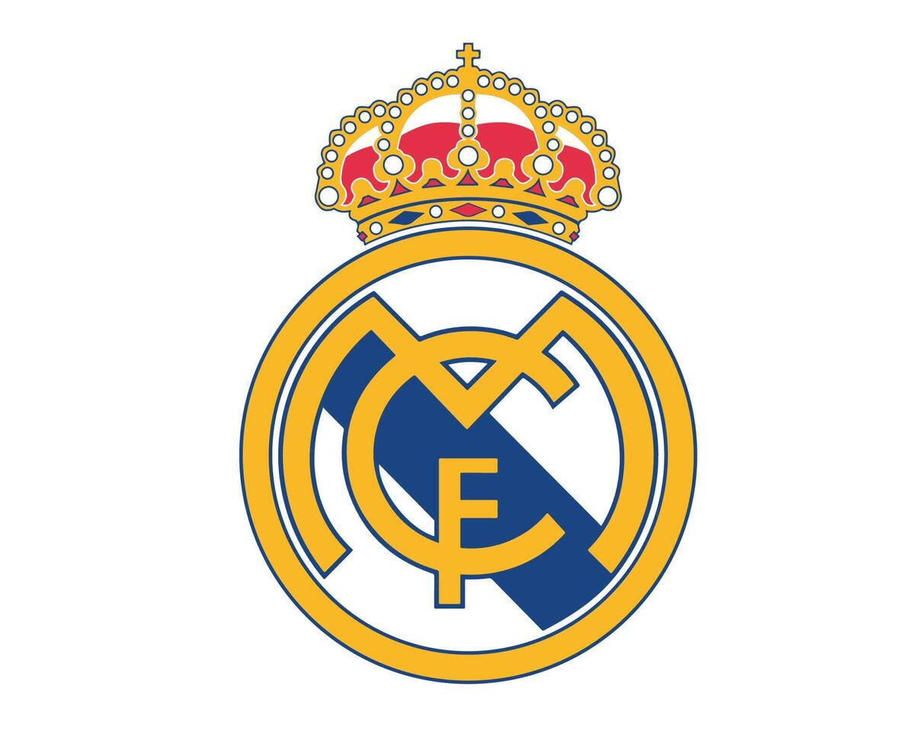

Esse é o time do Real Madrid, esse time é um time Europeu que foi criado 03 de março de 1902, o primeiro cara a comandar esse time foi Arthur Johnson, ele teve o prazer de comandar o maior time do mundo considerado pelo office futebol, ele é o que mais tem o maior campeonato do mundo que é chamado de Chanpions ligue, nesse campeonato ele tem 15 e o maior perto dele é o Millan que tem 7, e tem o proprio campeonato da la lila que é dos times europeus e também é o maior campeão com 36 títulos e o mais perto dele é o maior rival dele que é o Barcelona com 28, e é assim que o Real Madrid fez a sua própria historia lendária.